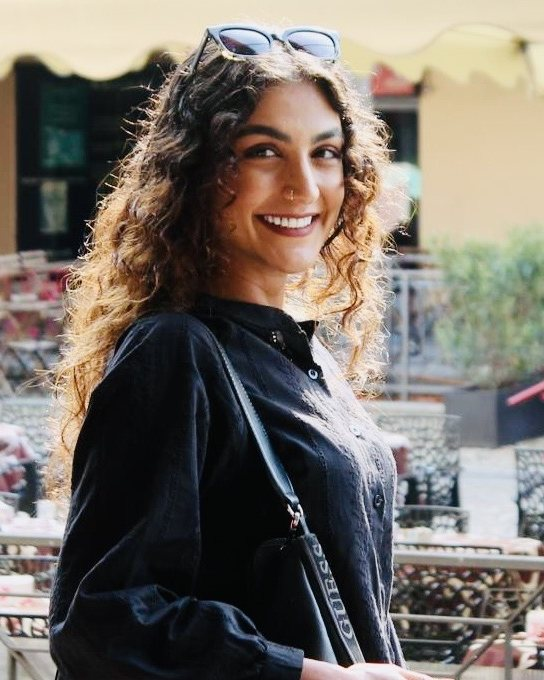

RNA-seq analysis
From raw reads to differential expression with nf-core/rnaseq, Salmon and DESeq2, plus enrichment with clusterProfiler.
Computational biologist
I turn genomics and transcriptomics into results a lab can rely on: RNA-seq, variant annotation and transposable element analysis, built as reproducible workflows.

I'm a computational biologist with experience in RNA-seq, variant annotation, transposable element analysis and reproducible workflows. I mainly work with R/Bioconductor, Nextflow, Bash, BEDTools and Google Cloud, with a focus on transcriptomics and computational genomics.
I started at the bench, with cell culture, PCR and HPLC quality control, before moving to the command line. I know where the data comes from, and what the biology needs from the analysis.
From raw reads to differential expression with nf-core/rnaseq, Salmon and DESeq2, plus enrichment with clusterProfiler.
VCF processing with nf-core/sarek and annotation with VEP, SnpEff and AlphaMissense, using resources such as ClinVar and gnomAD.
Nextflow workflows under Git version control, run locally or on Google Cloud Compute Engine.
Quarto and R Markdown reports in HTML or PDF, with ggplot2 figures ready to share.
A reproducible workflow that combines RNA-seq processing with variant annotation using VEP, SnpEff and AlphaMissense. Genomic and gene-expression data come together in one structured Quarto report, so the results are easy to interpret.
Analysis of transposable elements inside lncRNA regions: genomic interval overlaps, BED/GTF/GFF annotation processing and the distribution of TEs across non-coding RNA loci.
A Nextflow workflow for statistical modelling and machine learning in R. It compares linear regression, random forest and KNN models automatically using RMSE, R² and MAE, and reports hypothesis tests and variable importance.
Master's degree in Molecular Biology and Genetics, Digital Genetics track
Laboratory technician
Laboratory assistant
Bachelor's degree in Biotechnology
Have a dataset to analyse, a pipeline to build or a position to fill? Write to me and I will get back to you.
shakiba.hamedi01@universitadipavia.it